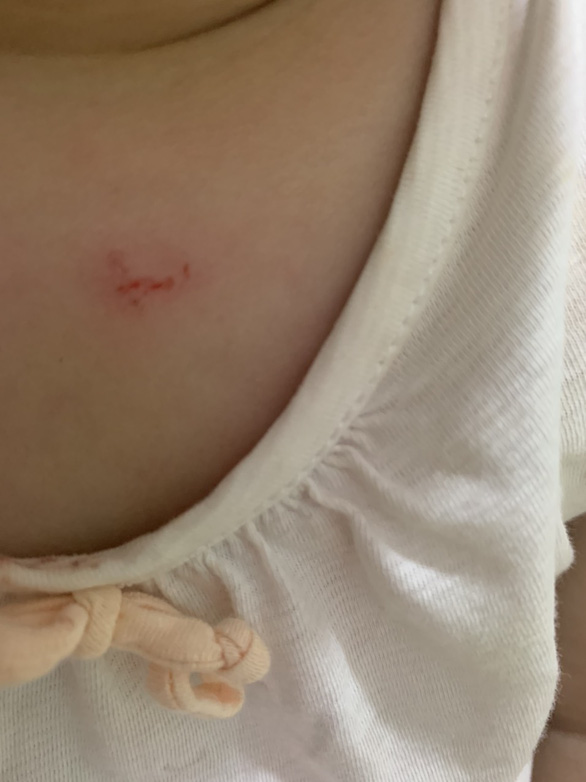
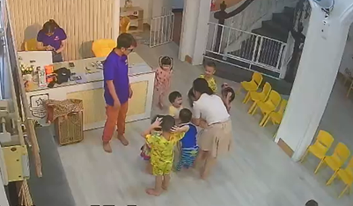
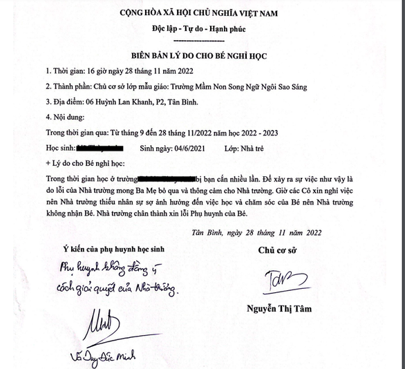

Trẻ mẫu giáo bị bạn cắn nhiều lần, trường cho nghỉ học vì 'quá áp lực'
TTO - Học sinh đi học bị bạn cắn nhiều lần. Phụ huynh phản ánh thì trường cho học sinh nghỉ học. Phụ huynh không đồng ý với cách giải quyết. Trường giải thích do 'quá áp lực', 'phụ huynh suốt ngày soi camera theo dõi các cô như tội phạm ấy'.

Bé T.A. bị bạn cắn trong khi học ở Trường mầm non song ngữ Bright Stars CDC - Tân Bình Campus - Ảnh: Gia đình cung cấp
Trong thư gửi đến báo Tuổi Trẻ, ông Võ Duy Đức Minh, ba của bé V.T.A. (khoảng 18 tháng tuổi), cho biết từ ngày 28-11, bé A. bị hệ thống Trường mầm non song ngữ Bright Stars CDC - Tân Bình Campus (6 Huỳnh Lan Khanh, phường 2, quận Tân Bình, TP.HCM) cho thôi học sau khi gia đình đến làm việc với trường về việc cháu tiếp tục bị bạn cắn đau, gây thương tích.

Bé T.A khóc sau khi bị bạn cắn ngày 25-11 - Ảnh cắt từ clip gia đình cung cấp
Cũng theo ông Võ Duy Đức Minh, gia đình đăng ký cho bé T.A. học tại đây từ ngày 12-9. Từ đó đến 25-11, T.A. bị các bạn trong lớp cắn nhiều lần và một số lần để lại sẹo.
"Thời gian đầu có một bạn cắn T.A. khoảng 2, 3 lần. Cô giải thích do bạn mọc răng. Sau này có hai bạn cắn con tôi 5, 6 lần. Đặc biệt có bạn cắn con tôi khá nghiêm trọng vì vết cắn nặng, để lại sẹo. Tôi có phản ánh với trường thì được thông báo là bạn đó có vấn đề tâm lý nên lâu lâu bạn sẽ có thái độ hung hăng, không kiềm chế" - ông Đức Minh kể.
Sau những lần đó, ông Minh có phản ánh thì trường xin lỗi qua tin nhắn hoặc điện thoại nhưng không có hình thức xử lý triệt để.
Tiếp tục, ngày 25-11, một bạn nam trong lớp (đã cắn nhiều lần trước đó) tiếp tục cắn bé T.A..

Biên bản lý do cho bé nghỉ học của nhà trường gởi cho phụ huynh - Ảnh: Gia đình cung cấp
Lần này, gia đình ông Minh phản ánh với cơ sở và đòi gặp phụ huynh bạn đó để nói chuyện và tìm hướng giải quyết. Nhưng cơ sở thông báo ba mẹ bạn đó sống ở nước ngoài, không liên lạc được với người đưa đón chăm lo cho bé.
"Là một người cha có con nhỏ, tôi không trách các bạn nhỏ cắn con tôi. Nhưng tại sao cô giáo đứng lớp không theo sát bạn hay cắn mà để tình trạng đó diễn ra liên tục và trách nhiệm của trường khi để sự việc diễn ra ngày càng nghiêm trọng hơn" - ông Minh bức xúc nói.
Ngày 28-11, cơ sở làm việc với ông Minh (có đại diện của UBND phường 2 và Công an phường 2) nhưng người đại diện cơ sở gợi ý ông Minh nên tìm trường khác cho con.
Ngay chiều 28-11, cơ sở cho bé T.A. thôi học kể từ ngày 29-11 với lý do các cô ở cơ sở vì quá áp lực nên đã xin nghỉ, không bảo đảm chất lượng chăm bé.
"Tôi không đồng ý cách giải quyết của cơ sở. Vì đây là những ngày cuối năm 2022, Tết Nguyên đán cận kề nên cho con tôi thôi học, bắt phụ huynh tìm trường mới cho con lúc này là không phù hợp.
Con tôi bị cho nghỉ học như vậy có hợp lý, thuận tình không khi trường là môi trường giáo dục luôn phải đặt sự yêu trẻ, dạy nhân văn, đạo đức lên đầu?", ông Minh trình bày.